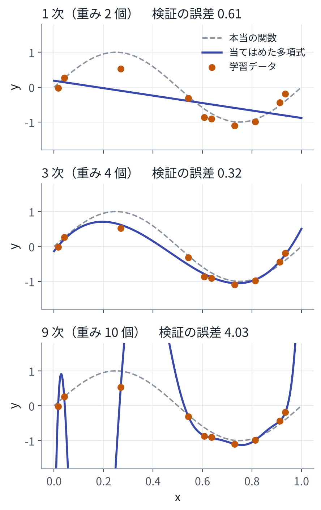
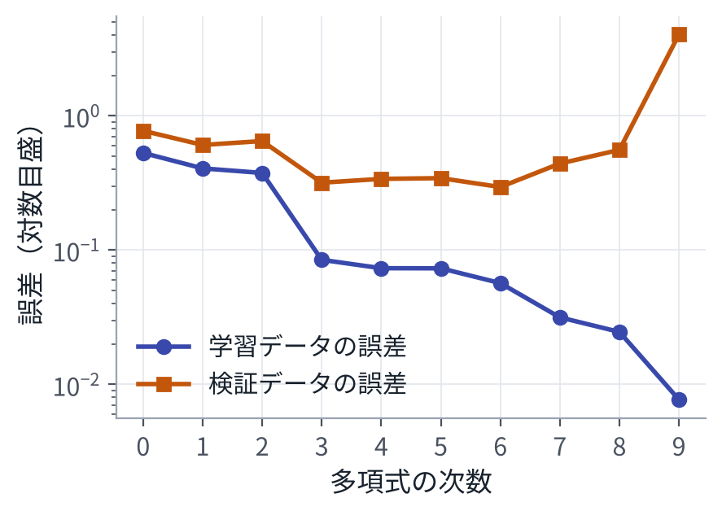

目次
1式を書く代わりに、データから作る
MPC では、人がモデル（運動方程式）とコストを書き、実行のたびに最適化で入力を決める。式で書けるものは、これで扱える。
しかし、式で書けないものがある。たとえば「カメラ画像から、コップの位置を出す」関数である。画像は数十万個の数の並びで、どの数がどうなればコップなのかを、人が式で書くことはできない。一方で、「画像」と「そのときのコップの位置」の組なら、たくさん集められる。
機械学習は、この組の集まり（データ）から、関数を作る。入力を \(x\)、出力を \(y\) とし、\(N\) 組のデータを次のように書く。
\[ \mathcal D = \{(x_1, y_1),\ (x_2, y_2),\ \dots,\ (x_N, y_N)\} \]ほしいのは、データにない新しい \(x\) に対しても \(y\) をうまく当てる関数 \(f\) である。正解 \(y\) の付いたデータから学ぶので、これを教師あり学習という。この資料で扱う学習は、ほとんどがこの形か、その変形である。
23 つの部品：モデル、損失、最適化
機械学習の手順は、どれほど大きなモデルでも、次の 3 つに分けられる。
モデル
関数の形を決め、調整できる数を残しておく。調整できる数をまとめて \(\theta\) と書き、パラメータまたは重みと呼ぶ。モデルを \(f_\theta(x)\) と書く。この章の例では、\(M\) 次の多項式を使う。
\[ f_w(x) = w_0 + w_1 x + w_2 x^2 + \dots + w_M x^M \]重みは \(w_0, \dots, w_M\) の \(M+1\) 個である。3 章のニューラルネットも、VLA も、形が複雑で重みが多い（数億〜数十億個）だけで、「重みを持つ関数」であることは同じである。
損失
モデルの出力が正解からどれだけずれているかを、1 つの数で表す。回帰でよく使うのは、二乗誤差の平均である。
\[ L(\theta) = \frac{1}{N}\sum_{i=1}^{N} \big( f_\theta(x_i) - y_i \big)^2 \]なぜ二乗なのか、分類ではどうするのかは、2 章で確率の言葉を使って説明する。
最適化
損失を最小にする重みを探す。
\[ \theta^\star = \arg\min_\theta\ L(\theta) \]この「最小にする重みを探す」ことを、機械学習では学習と呼ぶ。MPC の最適化との違いは、MPC が実行のたびに入力を最適化するのに対し、機械学習は事前に一度だけ重みを最適化し、実行時は \(f_\theta(x)\) を計算するだけ、という点である。
3重みを求める 2 つの方法
式で解く（正規方程式）
多項式は \(x\) について非線形だが、重み \(w\) については線形である。特徴を並べた行列 \(\Phi\)（\(i\) 行目が \([1, x_i, x_i^2, \dots, x_i^M]\)）を使うと、損失は次の形になる。
\[ L(w) = \frac{1}{N}\,\big\| \Phi w - y \big\|^2 \]勾配を 0 と置くと、連立 1 次方程式になる。これを正規方程式という。
\[ \nabla_w L = \frac{2}{N}\,\Phi^\top(\Phi w - y) = 0 \] \[ \Longrightarrow\quad \Phi^\top \Phi\, w = \Phi^\top y \]少しずつ下る（勾配降下法）
重みを適当に決め、勾配の逆向きに少しずつ動かす。
\[ \theta \leftarrow \theta - \eta\, \nabla_\theta L(\theta) \]\(\eta\) を学習率という。損失が 2 次関数なら、勾配降下法が収束する条件は、損失のヘッセ行列の最大固有値 \(\lambda_{\max}\) を使って \(\eta < 2/\lambda_{\max}\) と書ける。大きすぎると発散し、小さすぎると遅い。
式で解けるのに勾配降下法を使うのは、ニューラルネットでは損失が重みの 2 次関数にならず、式で解けないからである。深層学習の学習は、ほぼすべて勾配降下法の仲間で行う。
データが多いときは、毎回すべてのデータで勾配を計算する代わりに、ランダムに選んだ一部（ミニバッチ）で計算する。勾配にばらつきが乗るが、1 回の計算が軽くなる。これを確率的勾配降下法（SGD）という。3 章では、学習率を自動で調整する Adam も使う[1]。
4学習データで良くても、だめなことがある
本当の関係が \(y = \sin(2\pi x)\) で、測るたびに雑音が乗るとする。10 点のデータに、1 次、3 次、9 次の多項式を当てはめる。

9 次式は、重みが 10 個あり、10 点を全部通ることができる。学習データの誤差はほぼ 0 になる。しかし、点の間では本当の関数から大きく外れる。学習データの雑音まで覚えてしまったのである。これを過学習という。
本当にほしいのは、学習データの損失（経験損失）ではなく、これから来るデータでの損失の期待値（期待損失）である。
\[ \underbrace{\hat R(\theta) = \frac{1}{N}\sum_{i=1}^{N} \ell\big(f_\theta(x_i), y_i\big)}_{\text{学習データで測る}} \] \[ \underbrace{R(\theta) = \mathbb{E}_{(x, y)\sim p}\ \ell\big(f_\theta(x), y\big)}_{\text{本当にほしいもの}} \]\(p\) はデータが出てくる本当の分布で、学習する側は知らない。そこで、データの一部を学習に使わずに取っておき（検証データ）、それで \(R\) を見積もる。

過学習を防ぐ方法は、主に 3 つある。
- データを増やす。同じ 9 次式でも、データが 100 点あれば、雑音を覚えきれなくなる。
- 正則化。重みが大きくなることに罰を与える。たとえば損失に \(\lambda \|w\|^2\) を足す。
- モデルを小さくする。重みの数を減らす。
深層学習のモデルは、データの数より多い重みを持つことが珍しくない。それでもうまく汎化することが多いのは、データの量、モデルの構造、学習のしかたが合わさった結果だと考えられているが、理由はまだ完全にはわかっていない[2]。確かなのは、検証データで測らない限り、学習がうまくいったかはわからない、ということである。
検証データは、次数や \(\lambda\) を選ぶのにも使う。選ぶのに使ったデータでの成績は、少し楽観的になる。最後の性能は、どこにも使っていないテストデータで測る。
5演習
演習 1回帰と過学習
リポジトリの一番上で実行する。numpy と matplotlib だけで、数秒で終わる。
python3 vla_math/ch01_regression.py出力の一部（Python 3.13、numpy 2.5 で実行）：
(1) 正規方程式で多項式を当てはめる（学習データ 10 点、検証データ 200 点）
次数 重みの数 学習データの誤差 検証データの誤差
1 2 0.406 0.607
3 4 0.085 0.318
9 10 0.008 4.030
(2) 勾配降下法で 3 次の多項式を学習する
学習率 0.299（損失の曲がり具合の最大値 3.34 の逆数）
100 回目: 学習データの平均二乗誤差 0.1481
10000 回目: 学習データの平均二乗誤差 0.0526
200000 回目: 学習データの平均二乗誤差 0.0072
正規方程式の答えの平均二乗誤差: 0.0072
学習率を 0.658（2 / 最大値 を超える）にすると: … 100 回目 1.5e+15, 159 回目 inf
(3) 9 次の多項式に正則化を足す
λ = 0e+00: 学習 0.008、検証 4.030
λ = 1e-06: 学習 0.070、検証 0.315
(4) データを増やして、9 次の多項式を当てはめる
学習データ 10 点: 学習 0.008、検証 4.030
学習データ 100 点: 学習 0.183、検証 0.266
見るところ：
- (1) 9 次式は、学習データの誤差が最小なのに、検証データの誤差が最大である。
- (2) 勾配降下法は、正規方程式と同じ答えにたどり着くが、20 万回かかる。\(x^k\) の列どうしが似ていて、損失の谷が細長いからである。学習率を \(2/\lambda_{\max}\) より大きくすると発散する。
- (3)(4) 正則化か、データを増やすと、9 次式でも検証データの誤差が下がる。
変えてみる：雑音 NOISE を 0.05 や 0.5 にする。学習データの点数を 20 にする。
6まとめ
- 機械学習は、データから関数を作る方法である。式で書けない関係でも、入力と正解の組を集めれば作れる。
- 部品は 3 つ。重みを持つ関数（モデル）、ずれを測る数（損失）、損失を下げる手順（最適化）。
- 学習とは、損失を最小にする重みを探すことである。深層学習では、勾配降下法の仲間を使う。
- 学習データの成績は当てにならない。使っていないデータで測る。差が大きければ過学習である。
7確かめる問題
- 多項式は \(x\) について非線形なのに、正規方程式で解けるのはなぜか。
- 9 次式で 10 点を当てはめると、学習データの誤差がほぼ 0 になるのはなぜか。
- 勾配降下法の学習率を大きくしすぎると、何が起こるか。2 次関数の場合に、条件を式で書け。
- 検証データで次数を選んだあと、もう一度別のデータ（テストデータ）で測るのはなぜか。
8読むもの
※参考文献
- D. P. Kingma and J. Ba, "Adam: A Method for Stochastic Optimization," 2014. arXiv:1412.6980
- S. J. D. Prince, "Understanding Deep Learning," MIT Press, 2023. 本の全文が公開されている。https://udlbook.github.io/udlbook/
- 斎藤康毅『ゼロから作る Deep Learning Python で学ぶディープラーニングの理論と実装』オライリー・ジャパン, 2016.